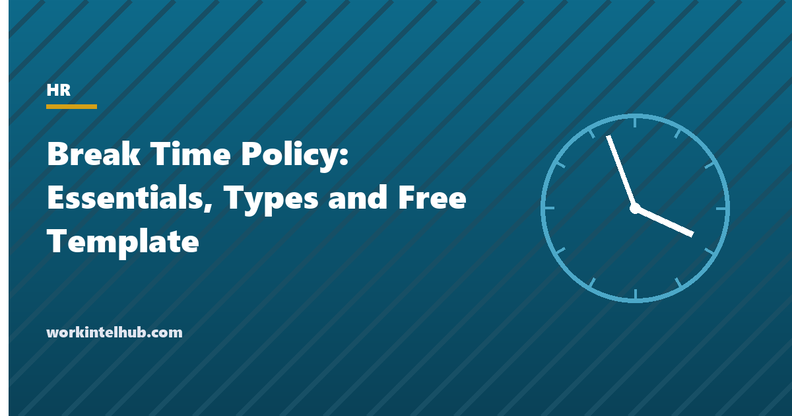

Break Time Policy: Essentials, Types and Free Template

Federal law does not require employers to give breaks at all. It only says what happens when they do: a rest break of up to about twenty minutes is paid working time, and a meal break of thirty minutes or more can be unpaid if the employee is fully relieved of duty. Nineteen states fill the gap with meal break mandates, nine add paid rest breaks, and California and Washington add premium pay when a break is missed. A break policy therefore has to say what the company offers, which state rules apply, and how breaks are recorded, because an unrecorded meal break that was deducted from pay is unpaid work.
This page sets out the break types, the federal rule, the state rules in summary, the lactation break requirement that now applies to nearly every employer, and a policy template with a break schedule and a missed-break log.
Download the templates
Free files: Word, Excel and PDF
Three files, free, no email required. Word to edit, Excel to track, PDF to print or share.
Templates open in Microsoft Word, Excel, Google Docs and Sheets, LibreOffice and any PDF reader. Free to use and adapt for your organisation.
What is in the template
- Policy. Seven sections covering rest breaks, meal breaks, lactation breaks, recording, scheduling and violations, with bracketed values to set.
- Break schedule. Who takes which break when, and who covers.
- Missed-break log. The record that turns a missed break into paid time and, where state law requires, a premium.
- State rules. A summary sheet for the states with meal and rest mandates.
The three break types
| Type | Typical length | Paid? | Federal rule | Notes |
|---|---|---|---|---|
| Rest break | 10 to 15 minutes | Yes | Breaks of about 5 to 20 minutes are hours worked (29 CFR 785.18) | Mandated in nine states, usually 10 minutes per 4 hours |
| Meal break | 30 to 60 minutes | No, if fully relieved | Bona fide meal periods of 30 minutes or more are not hours worked if the employee is completely relieved (29 CFR 785.19) | Mandated in about nineteen states; timing rules vary |
| Lactation break | As needed | Concurrent with paid breaks; otherwise unpaid unless working | Reasonable break time and a private non-bathroom space for one year (FLSA section 7(r), extended by the PUMP Act) | Applies to nearly all employers; state laws may add more |
The rules that matter most
Three things cause most break disputes. First, the fully relieved test: a meal break during which the employee answers calls, watches a counter or eats at the desk because the phone might ring is working time and must be paid, whatever the policy says. Second, automatic deductions: payroll systems that subtract thirty minutes a day regardless record a break that may not have happened; the policy requires clock-out and an attestation instead. Third, premiums: California owes an hour's pay for each day a meal break is missed and another for a rest break, and Washington and Oregon have their own remedies, so the missed-break log records whether the premium was paid.
Minors have separate and stricter rules in most states, and some industries (healthcare, transportation, manufacturing) have their own. The hours worked guide covers what counts as working time, and the laws by state pages list the state agencies to check.
Writing the policy
- State what the company provides, not just what the law requires; a 15-minute paid break policy is lawful everywhere and simpler than a map of state minimums.
- Name the state rules that apply at each site, so supervisors know a 10-minute rest break is a right in California and a courtesy in Texas.
- Make clocking out for meals the rule, and attestation at clock-out the check.
- Say explicitly that supervisors may not discourage breaks; most missed-break claims start with a manager who did.
- Cover remote employees: breaks apply to them too, and a laptop at the kitchen table is still a desk.
Key takeaways
- Federal law does not require breaks but defines which ones are paid: short rest breaks always, meal breaks only if the employee is fully relieved.
- About nineteen states mandate meal breaks, nine mandate paid rest breaks, and California, Washington and Oregon add remedies for missed breaks.
- Nearly every employer must provide lactation breaks and a private non-bathroom space for a year after birth.
- Clock out for meals, attest at clock-out, never deduct automatically, and log missed breaks with the premium paid.
Frequently asked questions
Are employers required to give breaks?
Not under federal law. The Fair Labor Standards Act only governs pay: rest breaks of up to about twenty minutes are paid working time, and meal breaks of thirty minutes or more are unpaid only if the employee is completely relieved of duty. About nineteen states require meal breaks and nine require paid rest breaks.
Is a 15-minute break paid?
Yes. Under federal rules, breaks of roughly five to twenty minutes are hours worked and must be paid. An employer can choose not to offer them where state law does not require them, but cannot offer them unpaid.
Can an employee work through lunch?
If the employee works during a meal break, the time is paid. In states with meal break mandates, the employer may also owe a premium (California: one hour's pay) and may be in breach even if the employee chose to work. Policies should require clocking out and bar on-duty meals unless the state permits a written on-duty meal agreement.
What are the lactation break rules?
Under the FLSA as amended by the PUMP Act, nearly all employers must give nursing employees reasonable break time to express milk for one year after birth and a private space that is not a bathroom. Time is unpaid unless it runs with a paid break or the employee is not fully relieved; many state laws add paid time or longer periods.
Should breaks be deducted automatically from timesheets?
No. Automatic deductions record a break that may not have been taken. Require employees to clock out and in for meals, ask them to confirm at clock-out that breaks were received, and pay any missed or interrupted break as time worked.